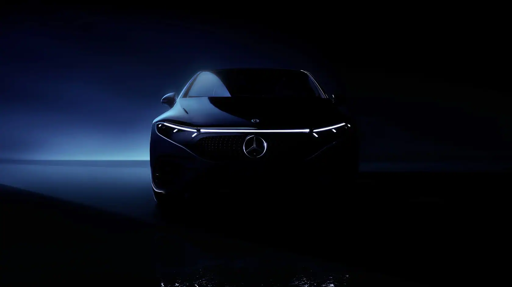
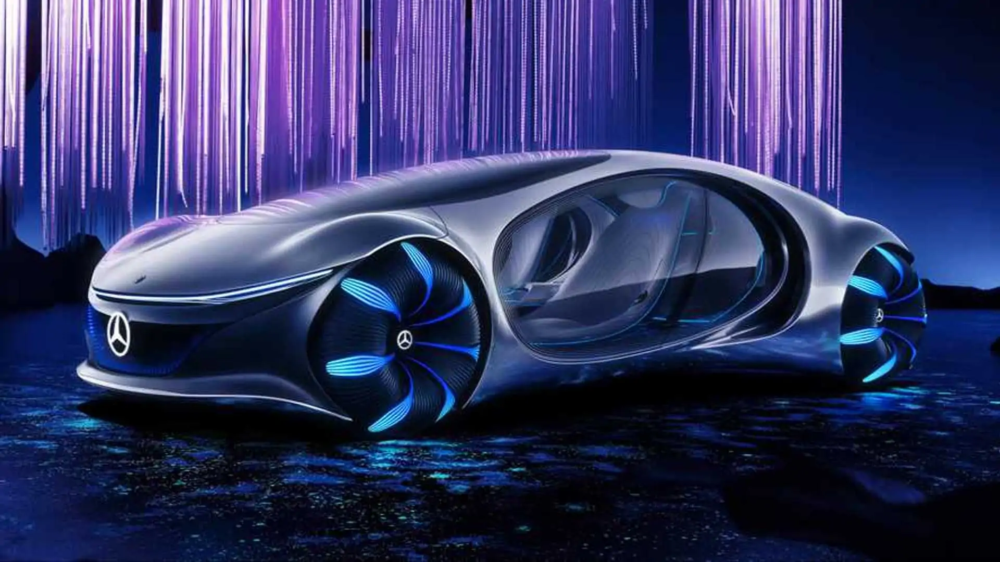

Wir
sind die Zukunft der Automobil-Industrie.
Mit fortschrittlichster Elektrotechnologie
Wir bei Mercedes-Benz setzen auf digitale und nachhaltige Innovationen, um die Zukunft der Luxusmobilität zu gestalten. Unsere Kunden schätzen immaterielle Werte wie Zeitgewinn und Verantwortung. Mit unserem Innovationsgeist und den Zielen „Lead in electric“ und „Lead in car software“ treiben wir die elektrische und digitale Transformation voran und definieren Luxus im digitalen Zeitalter neu.
Mit unserem Konzeptfahrzeug **VISION AVTR** gestalten wir bei Mercedes-Benz die Mobilität der Zukunft. Durch die Integration von **Brain-Computer-Interfaces (BCI)** ermöglichen wir eine völlig neue Art der Steuerung: Nutzer können Funktionen wie Navigation oder Licht allein durch Gedanken bedienen. Auf der IAA zeigen wir, wie ein Gerät mit Elektroden die neuronale Aktivität misst und durch visuelle Aufmerksamkeit Fahrzeugfunktionen auslöst. Mit dem VISION AVTR, inspiriert von unserer Zusammenarbeit mit Disney und dem Film *Avatar*, präsentieren wir eine Vision von **Advanced Vehicle Transformation**, die Mensch, Maschine und Natur in Einklang bringt und den Weg in eine nachhaltige und intuitive Mobilität ebnet.
© 2024 Yeray und Jacobo